Plain-English guides to running your deals in Left Main
From the first call with a seller to a closed, assigned contract — these guides walk through what you'll actually see on screen, in the order you'll use it.
Lead, Opportunity & Transaction Management
Capturing a seller Lead, working it as an Opportunity, converting to a Transaction at contract signing, and walking it through acquisition and disposition to closing.
Automated email, text, task, and physical-mail follow-up — enrolling records one at a time or in bulk, confirming Direct Mail addresses, and reading the send timeline.
Client / Investor Portal — the external-facing portal for transaction documents, notes, and buyer messaging.
Funding — Left Main's deal financing (credit lines, disbursement requests), tied to the Transaction Expenses covered in the first guide.
Open questions for the product team
A few details came up during research that are flagged rather than stated as settled fact — worth confirming before anyone treats them as current behavior:
Worth confirming
Whether the “twnsqr” buyer-notification sync is currently live (its validation rules are inactive in metadata); the actual vendor behind Direct Mail printing; and how a user stops an in-progress cadence mid-flight (the field exists — the button/action wasn’t located in this pass).
Guide
Lead, Opportunity & Transaction Management
This guide walks through the full life of a deal in Left Main — from the moment a seller first contacts you, through making an offer, to closing and assigning the contract to a buyer.
The big picture
A deal moves through three record types as it progresses: Lead (a seller who might sell their property) → Opportunity (a deal you're actively working) → Transaction (the contract is signed and you're walking it to closing). Each stage carries all the property details forward automatically — you never have to re-type an address, square footage, or asking price as a deal moves along.
1. Leads: your incoming sellers
A Lead is created the moment someone who might sell you their property enters the system — usually from a call, a web form, or a marketing campaign.
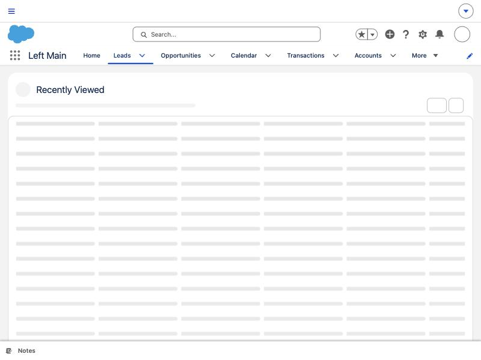
Lead list view — New, Import, Change Status, Change Owner, and Send Email
Lead types
When you create a Lead, you'll be asked to pick one of three types:
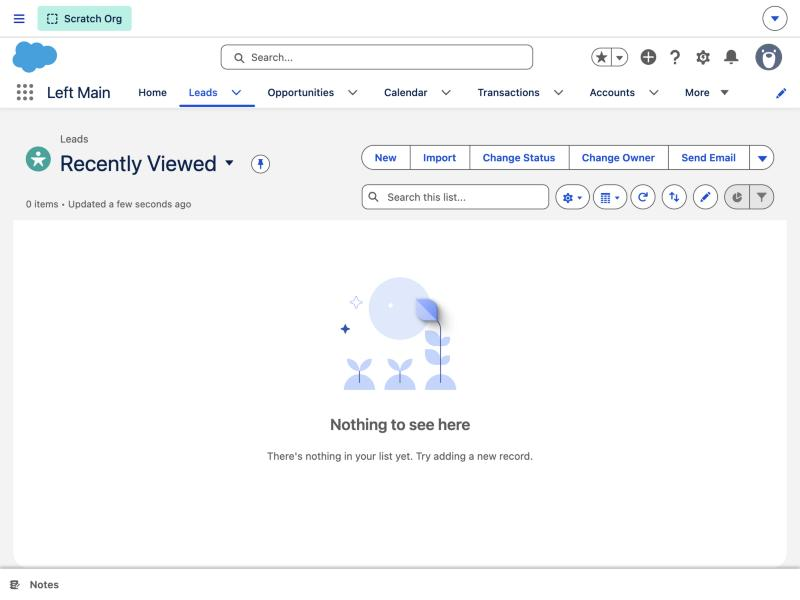
Type
Use it for
Homeowner
The normal case — a specific person with a specific property who might sell.
Prospect
A lead that hasn't been confirmed as a real, unique homeowner yet (for example, a raw marketing-list entry).
Business Account
A company (a wholesaler or another business sourcing you leads/deals) rather than an individual homeowner.
Why this matters
If you create a Prospect lead and the system later realizes it's actually the same person as an existing Homeowner lead (matched by address, phone, or mobile number), it automatically merges the two — the Prospect record disappears and its campaign history moves onto the Homeowner record. This is expected behavior, not an error. If a Prospect lead you were viewing vanishes, it almost certainly means it was just merged into an existing Homeowner lead for the same property.
Filling out a new Lead
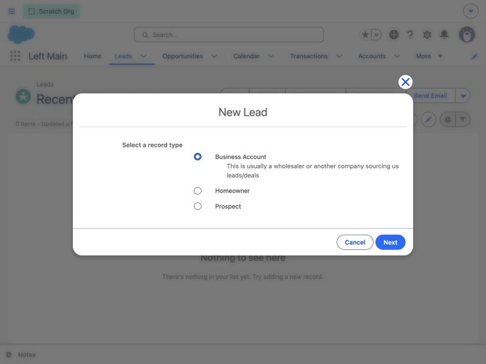
A few fields worth knowing about:
Lead Status starts at New Lead and moves through Working → Qualified/Retail → Unqualified (or Converted, once you turn it into a deal). Changing the status can reveal different follow-up fields — click View all dependencies if you want to see how statuses and other fields relate.
Next Step is a free-text note for yourself. The field's own hint sums it up well: "What is the next step for this lead? Don't forget to also set a task for yourself to complete this next step." Get in the habit of pairing this field with an actual Task so the reminder doesn't get lost.
Enable Lead Follow Up Sequence is a one-click way to put this lead into an automatic email/text follow-up track instead of (or in addition to) calling them yourself. See Cadences & Direct Mail for what that does.
If a lead didn't pan out, use Unqualified Reason to say why (already sold, outside your buy area, hostile contact, etc.) — this is what your reporting is built on, so pick the closest match rather than skipping it.
Ignore this field
A field labeled “Lead Source(Don't use this)” exists on some layouts — ignore it. Use the regular Lead Source field instead. It's a known leftover field; don't enter data in it.
“Next Best Action” suggestions
On a Lead's record page you'll often see a recommendation card suggesting your next move — things like Call this lead (which launches a guided call script), Text this lead, Enroll in a cadence, or Add to a direct mail campaign. These suggestions change based on the lead's current status and data, so don't worry if you see different options on different leads — it's reading the record, not a fixed menu.
Converting a Lead into a deal
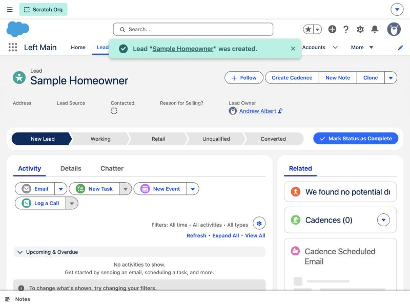
Once a lead is a real, serious opportunity, convert it. Open the record, click the dropdown next to Clone, and choose Convert:
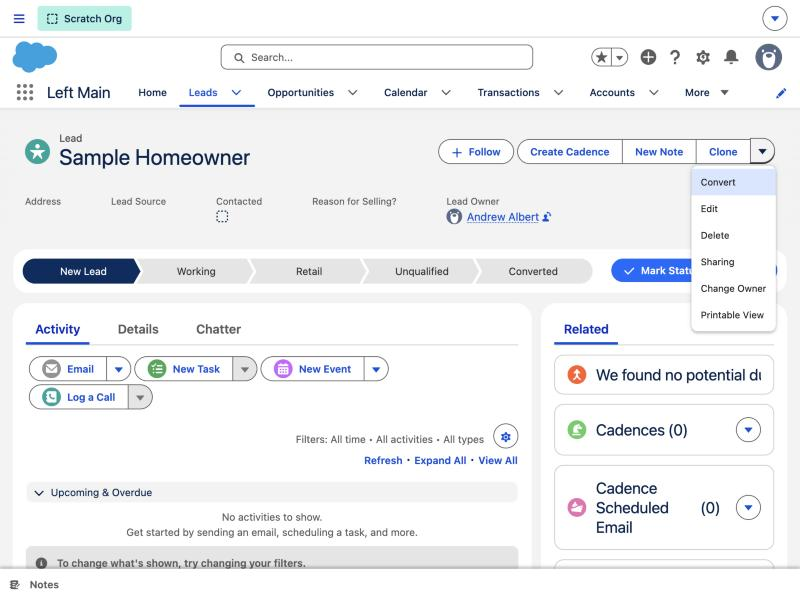
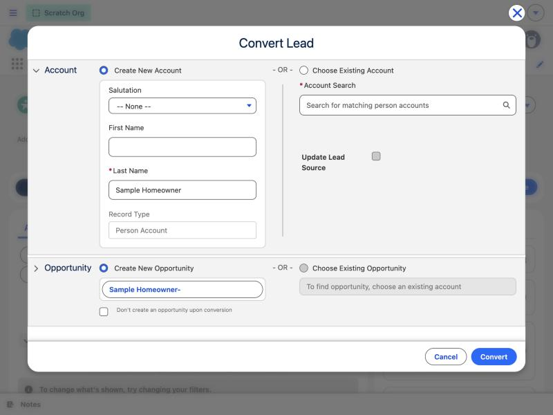
You can create a brand-new Account/Opportunity, or attach this lead to an existing Account/Opportunity if one already exists for this property (for example, a repeat seller).
Leave “Don't create an opportunity upon conversion” unchecked unless you specifically don't want a deal opened yet.
All the property details you captured on the Lead (bedrooms, square footage, asking price, repairs needed, mortgage owed, and more) copy automatically onto the new Account and Opportunity — you don't need to re-enter any of it.
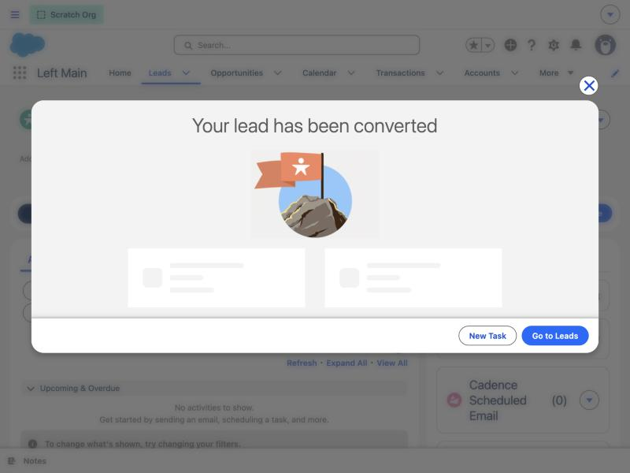
Tip
Some orgs also let you convert a batch of leads by checking a “Convert this Lead” checkbox on the record instead of using the Convert button. If your org has that enabled, conversion happens in the background within a minute or two — the record won't flip to Converted instantly, so don't be alarmed if it takes a moment.
2. Opportunities: the deal in progress
An Opportunity is the active deal on a property, sitting under the Account that was created (or chosen) during Lead conversion.
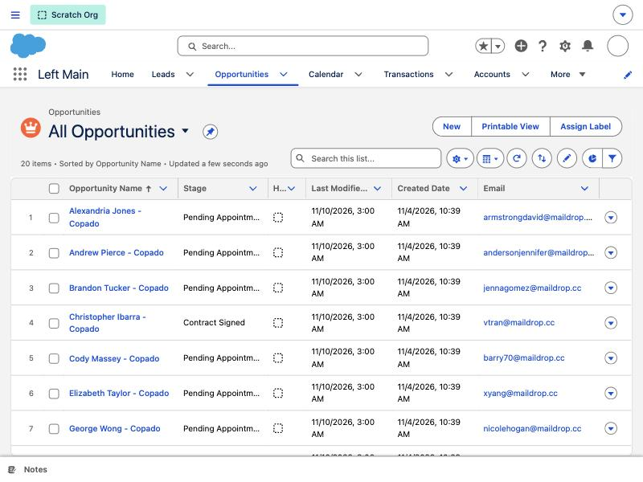
Stages
Opportunities move through this path:
Pending Appointment → Appointment Set → Negotiation/Review → Follow-up / Long Term Follow-Up → Contract Signed → Closed Lost
(There's also a Retail stage for deals that turn out to be better suited to a retail sale than a wholesale purchase.)
Follow-up and Long Term Follow-Up are “parking” stages for deals that are still alive but have stalled — use them instead of leaving a stale deal sitting in an active-sounding stage.
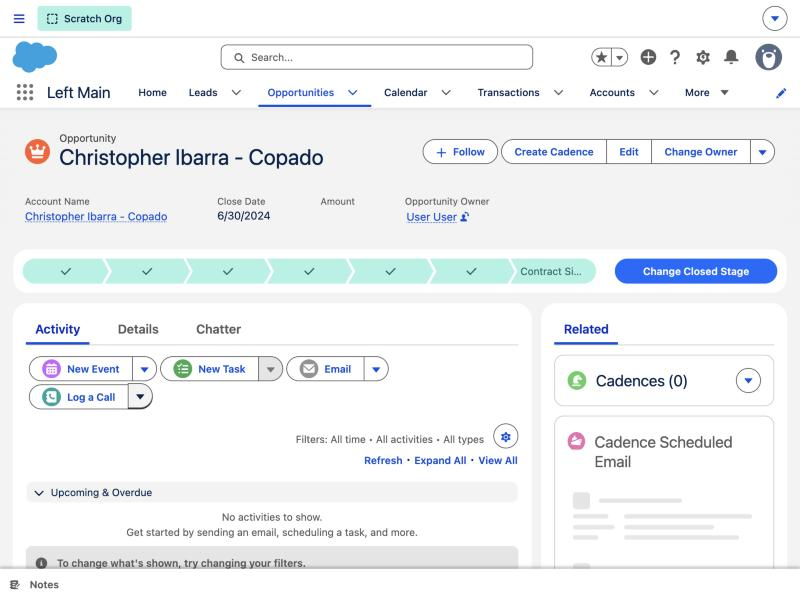
What happens when you mark a deal “Contract Signed”
This is the single most important thing to know about Opportunities in Left Main: moving the stage to Contract Signed automatically creates a Transaction record for the deal. This is custom to Left Main — it's not something a normal Salesforce setup does — and it's the handoff point from “working the deal” to “closing the deal.”
Before that stage change will go through, the Opportunity needs an Account on the record, and a Last Offer Made amount.
If you get blocked
If you try to set the stage to Contract Signed without both of those filled in, you'll see this exact error: “Either Account or Last Offer Made is not specified.” That's the fix — go fill in whichever of those two fields is missing, then try the stage change again.
Automatic cadence cleanup
You don't need to manually stop a lead or Opportunity's email/text follow-up sequence once a deal is signed or dead — the system automatically stops active cadences when an Opportunity reaches a terminal stage, so your now-signed sellers won't keep getting “are you still interested in selling?” messages.
Next Best Action on Opportunities
Similar to Leads, an Opportunity record page can show suggestions like Deal Analysis or Appointment Completed — again, dynamic based on the record, not a fixed list.
3. Transactions: walking the deal to closing
A Transaction record is created the moment an Opportunity hits Contract Signed. Think of it as the operational file for “all active contracts pending closing” — it's where acquisition and disposition work both happen.
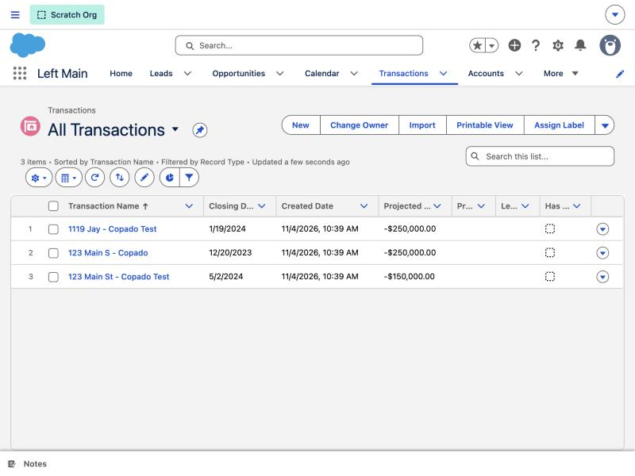
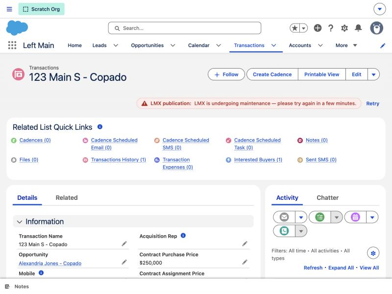
A Transaction record tracks two sides of the deal:
Acquisition side (buying the property)
Acquisition Rep — who worked the purchase.
Contract Purchase Price — what you're paying the seller.
Disposition side (reselling/assigning the contract)
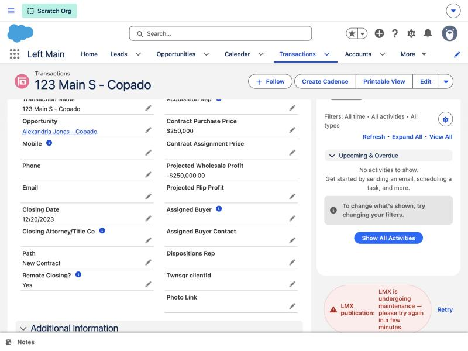
Dispositions Rep — who's finding/managing the buyer.
Assigned Buyer / Backup Buyer — the investor(s) this deal is going to.
Contract Assignment Price / Wholesale Marketing Price — what you're selling the contract for.
Dispo Status moves through its own pipeline: Pending Underwriting → Sent to VIP List / Sent to Regular List → Assigned (Clear to Close or Renegotiating) → Closed/Won (or Cancelled Contract/Lost). The VIP vs. Regular List split means your top buyers get first look at new deals.
Projected Wholesale Profit / Projected Flip Profit — your expected margin depending on which exit strategy you take.
Overall deal progress
The Path bar at the top of the Transaction record is the fastest way to see where a deal stands at a glance — it walks from New Contract through document handling, a possible Title Issues detour, a disposition decision point, financing/buyer-finding, all the way to Clear to Close and finally Closed/Won (or Contract Cancelled/Lost).
Other things on a Transaction record
Closing Date, Closing Attorney/Title Co, and Remote Closing? cover the logistics of actually closing.
Lockbox Code — share this with buyers/contractors who need property access without you being present.
Interested Buyers (related list) tracks who's expressed interest in this specific deal.
Transaction Expenses tracks any financing Left Main extended to fund the deal (loan amount, interest rate, payoff amount/date) as well as general deal expenses — useful for seeing the full cost picture before you calculate your real profit.
SMS Opt-out is tracked per Transaction — opting a contact out of texts on one deal does not automatically opt them out everywhere, so check this on the specific record you're working.
You can also launch Create Cadence directly from a Transaction to put the buyer or seller into a follow-up sequence — see Cadences & Direct Mail.
Quick troubleshooting
What you're seeing
What it means / what to do
A Prospect lead you were viewing has disappeared
It was automatically matched and merged into an existing Homeowner lead for the same person/property — this is expected, not a bug.
“Either Account or Last Offer Made is not specified” when changing an Opportunity to Contract Signed
Fill in the missing Account and/or Last Offer Made field, then try again.
A Lead you checked “Convert this Lead” on hasn't converted yet
Conversion via that checkbox runs in the background — give it a minute or two, then refresh.
A field called “Lead Source(Don't use this)”
Ignore it — use the standard Lead Source field instead.
“Cadences automation Process is not activated yet” when clicking Create Cadence
Ask your Salesforce admin to activate Cadence automation for your org.
See also: Cadences & Direct Mail — for how the follow-up sequences referenced throughout this guide actually work.
Guide
Cadences & Direct Mail
A Cadence is Left Main's automated follow-up system — it sends a planned series of emails, texts, tasks, and even physical mail on your behalf, on a schedule, so a lead or buyer doesn't go cold just because you got busy.
This guide covers how to use cadences day-to-day. Building and configuring the cadence templates themselves is an admin task — see the note for admins at the end if that's what you're looking for.
1. The core idea: Libraries and Cadences
A Cadence Library is a reusable playbook — a pre-built set of emails, texts, tasks, and/or direct mail pieces, each scheduled a certain number of days apart. Your admin builds these; you just pick one.
A Cadence is what you get when you apply a Library to one specific record (a Lead, Opportunity, Contact, Interested Buyer, or Transaction). Applying a library is what actually schedules all the sends for that record.
Some orgs still offer an older “Folders” mode (pick an email folder, SMS folder, task folder, and direct mail folder individually, rather than one bundled library) alongside the newer Library mode. If you see a Library / Folders toggle when creating a cadence, use Library unless you have a specific reason to build an ad hoc combination — it's the current, recommended way to do this.
2. Enrolling one record in a Cadence
You can start a cadence from a Lead, Opportunity, Contact, Interested Buyer, or Transaction record.
Open the record and click Create Cadence.
In the modal, give the cadence a name (it defaults to “Initial Cadence” — rename it if you're running more than one cadence type on related records, so you can tell them apart later) and pick a Cadence Library from the dropdown. Only Active libraries show up here.
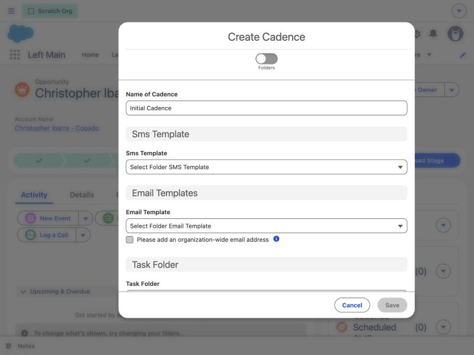
Click Save. You'll see a “Cadence created” confirmation, and the system schedules every step of the library automatically — you don't need to do anything further unless the library includes Direct Mail.
If it's not working
If you don't see the Create Cadence option working, or get a message that Cadence automation isn't activated yet, that's an org setup step — ask your Salesforce admin to turn it on. If you get a permission message saying you don't have access to Cadence libraries, that's a genuine permission restriction, not a bug — ask your admin for access.
If the library includes Direct Mail
If the Cadence Library you picked contains a Direct Mail step, you'll be asked to confirm the recipient's mailing address before saving — see Direct Mail below. If your org doesn't have Direct Mail turned on, you'll see an inline message explaining that and the step will be skipped; ask your admin if you need it enabled.
3. Enrolling many records at once
From a list view of Leads, Opportunities, Contacts, Interested Buyers, or Transactions, you can select multiple records and bulk-apply a cadence instead of doing them one at a time.
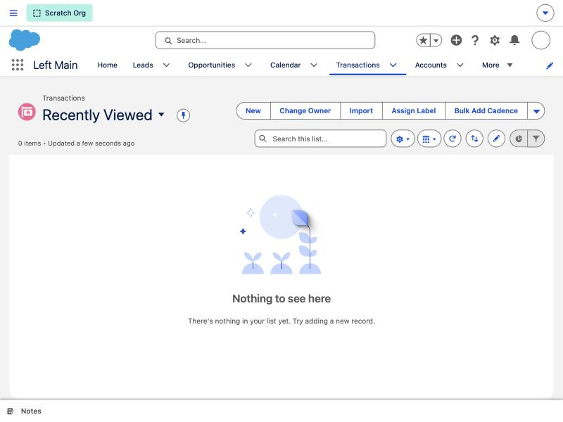
The bulk screen shows you a table of the records you selected, with a Has Cadence column (shown in red if the record already has an active cadence, green if not) — use this to deselect records you don't actually want to re-enroll.
A few records get automatically excluded and called out for you, for example: “2 converted leads were excluded. 1 record was manually removed. 15 Leads are selected.” (A Lead that's already been converted can't be put into a cadence.)
Direct Mail is not available when bulk-enrolling Transactions or Interested Buyers — if you need to send physical mail to those records, do it one at a time from the record itself.
Pick your Library (or Folders) just like the single-record flow, and save — every eligible record in your selection gets the same cadence applied at once.
4. Direct Mail: sending physical mail
Direct Mail cadence steps send an actual printed letter or postcard, not an email or text — you'll see this confirmed by a front/back image preview of the mail piece once it's been sent.
Because a physical mail piece needs a real, deliverable mailing address, Left Main always stops and asks you to confirm the recipient's address details before a Direct Mail step goes out — whether you're starting a new Direct Mail cadence or cloning an existing one. This is deliberate (not a different/broken version of the normal record screen): mail needs an address that email and texting don't.
What you'll need to confirm or provide:
A full street, city, state, and ZIP code.
Either a first and last name, or a company name. If neither of these is filled in, you'll see the error “Enter First Name and Last Name, or Company Name.” — fill in one of those two options and continue.
Left Main will suggest a starting address pulled from the record, or reuse an address you've confirmed before for that same record — you can always edit it before saving if it's out of date.
Once submitted, the cadence timeline will show the piece as “Direct Mail Order Submitted”, and later update with its final status.
5. Checking what's been sent: the Cadence Timeline
Open a record that has an active cadence and look for its Cadence related list / timeline to see every step — past, pending, and upcoming — in order.
Each step shows an icon for its type (email, text, direct mail, task, or call), how many days after the previous step it's scheduled, a short preview of the content (click it for the full message/letter), and a status badge:
Status you'll see
What it means
Pending
Scheduled, hasn't gone out yet.
Completed
Sent successfully.
Completed with after-hours override
Sent, but using your org's after-hours alternate message/template because the original send time fell outside allowed hours.
Direct Mail Order Submitted
The mail piece has been sent to the print/mail provider.
Failed
The send failed — check with your admin if you see this repeatedly.
Not Sent — Scheduled Date Passed
This step was set for a specific calendar date, and that date had already passed by the time the cadence was applied, so it was skipped rather than sent late.
Direct Mail steps also let you click through to see the actual front and back of the mail piece that was sent.
Quick troubleshooting
What you're seeing
What it means / what to do
“Cadences automation Process is not activated yet”
An org setup step your admin needs to complete — this isn't something you can fix from the record.
“You do not have permission to Cadence libraries”
A genuine permission restriction — ask your admin for access.
“This library contains direct mail steps, which you don't currently have access to”
Direct Mail isn't enabled/licensed for your org or user — ask your admin.
“Enter First Name and Last Name, or Company Name” while confirming a Direct Mail address
The recipient needs a name — fill in either a person's first/last name or a company name, then continue.
Direct Mail option missing while bulk-enrolling Transactions or Interested Buyers
Expected — Direct Mail isn't offered in bulk mode for those two object types. Enroll them individually instead.
A converted Lead wasn't included in a bulk cadence enrollment
Expected — once a Lead is converted it can no longer be enrolled directly; work with the resulting Opportunity/Contact instead.
Note for admins
The following are configuration tasks, not day-to-day usage, so they're only summarized here:
Building Cadence Libraries (the email/SMS/task/direct-mail steps and their schedule) is done in the Cadence Library builder, separate from the enrollment modal described above.
Automatic enrollment rules let you auto-enroll new Leads/Opportunities/Contacts/Interested Buyers/Transactions into a library based on field conditions, with a required default library for anything that doesn't match a rule.
After-hours overrides let you define business hours and swap in an alternate SMS/email template for anything that would otherwise send outside them.
The org-wide Cadence setup wizard controls which channels are enabled, your SMS/phone provider, default sender email, global stop rules, and working-hours handling.
Direct Mail mapping bundles control which fields on each object supply the mailing address, name, and company name used during address confirmation.
If you need any of the above changed, that's a conversation with your Salesforce admin, not something to configure from a Lead, Opportunity, or Transaction record.